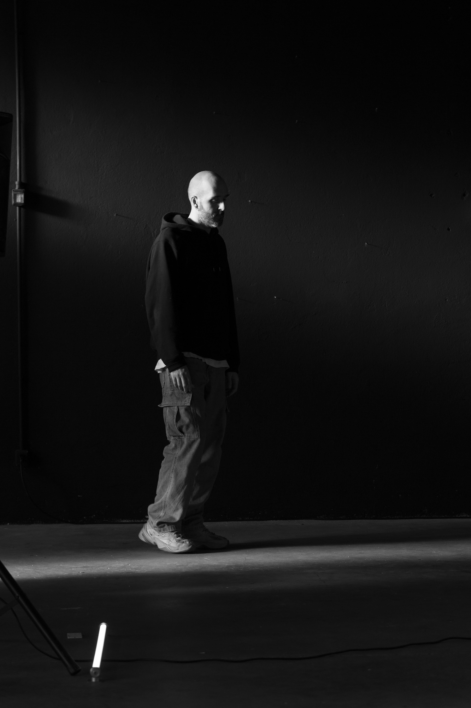

Cultural Researcher · Sound Curator · Music Editor · Milan
Fifteen years across indie bands, club music, gallery installations, and cultural journalism. The thread connecting all of it: sound as a way of thinking, not just making.
Mattia Barro Splendore explores how music shapes identity, aesthetics and communities. His work moves across editorial practice, artistic research and applied cultural projects — from gallery commissions and live performances to brand campaigns and institutional collaborations.
Milan-based, working internationally.
Music Editor at Rolling Stone Italia.

Ph. Antonella CatalanoMy practice starts from a single premise: sound is how we understand our own feelings. Working across performance, installation, and sonic research, I explore the space where sound stops being aesthetic and becomes a way of knowing. The works I make are attempts to locate that threshold — for myself, and for whoever is in the listening. Because we are all listeners. And listening, I believe, is how we find out who we are.
I am particularly interested in projects where these dimensions overlap — creating new formats between art, media and cultural production.